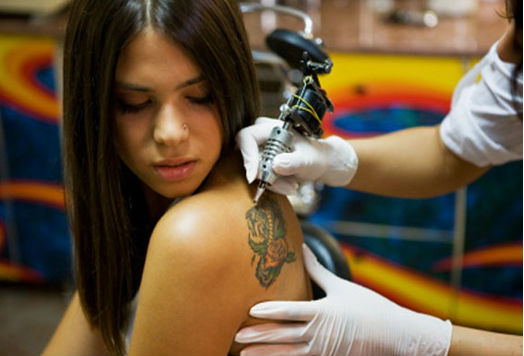

12 things You Need To Know Before You Get Your First Tattoo
Tattoos are the most ongoing accepted craze and fashion trend of
the modern generation. It’s a medium of art, where a human body is
used as a canvas. The only difference is that here needle is used as
the brush, through which ink is inserted into the dermis layer of the
skin to make different designs. Tattoos may be permanent, or
temporary—but in both ways, the motive is to look fashionable or trendy.
Though get tattooing is a modern style, the word tattoo has a
history. As it has derived from a Polynesian word “Tatau”, and if we
turn history pages we can find the emperor and warriors with
different types of tattoos on their body. The tattoo is done to sketch
any story or any spiritual symbol in the past.
Though tattooing is a great body art, still people have million
questions in their mind about the risk of tattooing, as it is directly
connected to our skin as well as blood. So chances of getting any
infection cannot be overlooked. So before you get your first tattoo,
you have to know some significant facts about the process and its
pros and cons. Here are some vital points.
1. SELECT A SKILLED ARTIST
Tattooing is a body art, so you must choose a skilled artist for this purpose. May be it cost little higher, but do not compromise with the safety major, as a skilled tattoo artist can do it better.
2. GO TO THE RIGHT PARLOUR
The main two things you should know before you get your first tattoo is select the right salon, where this is done with care. The parlour needs to be clean. So never make a mistake in a hurry. Before tattooing you must check online, the reviews of other clients will help you to have an idea about the parlour and the artist. As tattooing means creating a wound in your body, so you must not compromise with the safety and cost.
3. MAKE SURE THAT THE NEEDLE IS NEW
Needle is one of the most important things to be taken care of before tattooing. Make sure that the needle is unpacked before you as used needle can cause an infection and severe diseases like HIV, Or Hepatitis.
4. GET YOURSELF READY
Before you get your first tattoo, prepare yourself mentally and physically. Clear any kind of confusion, if you have about tattooing. Often we collect facts from our friends and families, who experience it before, but it is always better to go through the whole procedure online, like you can watch videos on how tattoos are done, to get a clear idea.
5. KEEP ENOUGH TIME
If you are going for a simple design for the tattoo, it will take little times, but an intricate design will need more hours to sit in the same posture, and may be few more sitting is required to complete. So your time is a vital factor here, and you must spare time.
6. DONT GET TATTOO JUST BEFORE YOUR BEACH VACATION
wound created by tattooing, takes at least two weeks to heal. So it is advisable not to get your tattoo if you have any vacation plan in a beach, like salt water, and UV rays may damage your skin and tattoo. So give your tattoo the time it needs to heal completely.
7. GET THE BODY PARTS FREE OF HAIR
If you are tattooing for the first time and you have chosen the body parts, that is hairy enough, shave the hair, as the Dr. does it before any surgery.
8. YOU MAY GET UNCOMFORTABLE SENSATION
New tattoos may itch during the healing time. But do not scratch it with sharp nails as you can peel off the tattoo by doing like this. Also, chances of getting an infection are high at this timely can use cortisone cream to lower the itching feeling.
9. TAKE THE SPOT TEST FIRST
Never forget to take the spot test before first time tattoo as your skin may have allergic with the Tattoo ink. Before getting tattoo, verify the ink on a small area of your skin and wait for some time. If any rashes or itching sensation comes out, then take necessary precaution like using steroids with the help of any Doctor.
10. TO AVOID A LONG TIME UNDER SHOWER
Keep the area of your skin, where the tattoo has been inked with mild water and soft soap. Don’t forget to pat it dry with a soft piece of clothes or towel, but no rubbing. But if you take a long shower, then your tattoo will take more time to dry up. Hence this will slow down the healing process.
11. KEEP IN MIND ABOUT THE PAIN
The process of tattooing causes pain as the needle is inserted into the skin, and the bigger tattoo you go for, you have to tolerate pain for a long time. Depending on the body parts, the pain varies. Like if you choose to place the tattoo on an area that has enough bone, it will hurt the most. Also, the power of tolerating pain varies.
12. IF YOU DO NOT LIKE, YOU CAN REMOVE IT
Suppose you do not like the design, you can remove your tattoo with the help of a professional. Although tattoo begins to fade after some years, if you want to get rid of it, you can cover it up or remove it. Keep in mind the removal must be done under expertise, and blue, black and green colours are easy to remove. If your tattoo is small, and you do not like it anymore, you can cover it up with a new design.
So these are few things you must think about before going for a tattoo. Though it engages pain, risk, your time and money, but also it will add something new to your looks.